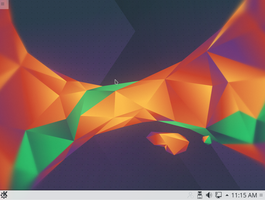

Kubuntu
 Kubuntu
Kubuntu  ist eine offizielle Variante von Ubuntu mit der Desktop-Umgebung Plasma von KDE. Geboten wird eine moderne Oberfläche, die sich hochgradig individuell gestalten lässt.
ist eine offizielle Variante von Ubuntu mit der Desktop-Umgebung Plasma von KDE. Geboten wird eine moderne Oberfläche, die sich hochgradig individuell gestalten lässt.
Die Kubuntu Versionen 12.04 und 14.04 besitzen einen LTS-Status und werden 5 Jahre unterstützt. Aufgrund der Umstellung auf die neueste Generation des Plasma-Desktops wurde der Unterstützungszeitraum für die LTS 16.04 auf 3 Jahre verkürzt.
Geschichte¶
In der ersten Ubuntu-Version 4.10 war durch den Synchronisationsprozess mit Debian KDE bereits in den Paketquellen enthalten und konnte nachinstalliert werden. Bedingt durch die starke Nachfrage wurde mit der Version 5.04 Kubuntu veröffentlicht, die ein Ubuntu mit KDE als Desktopumgebung bot. Kubuntu ist somit das erste offizielle Derivat von Ubuntu und etablierte die organisatorische Basis für die später folgenden Derivate.
Das Ziel bestand darin, durch eine gemeinsame Basis einerseits Redundanzen zu vermeiden, sowie die Errungenschaften von Ubuntu für den Linux-Desktop zu übernehmen und andererseits dem Anwender andere Desktopumgebungen zur Verfügung zu stellen.
Nach der Veröffentlichung der LTS 12.04 wurde durch Canonical bekannt gegeben, dass Kubuntu nicht mehr offiziell unterstützt werden würde und auf den Status eines normalen Derivats zurückgestuft wird. Die Kubuntu-Entwicklung sponserte anschließend hauptsächlich Blue Systems  , das einige Entwickler anstellte. Dadurch war es möglich, auch für die Version 14.04 einen Supportzeitraum von 5 Jahren zu garantieren.
, das einige Entwickler anstellte. Dadurch war es möglich, auch für die Version 14.04 einen Supportzeitraum von 5 Jahren zu garantieren.
Langjährig schwelende Unstimmigkeiten zwischen Kubuntu und insbesondere Jonathan Riddell als Hauptentwickler auf der einen Seite und dem Ubuntu-Beirat sowie Canonical auf der anderen Seite führten 2015 zum Rückzug von Riddell als Release Manager und dem Abgang einiger Entwickler. Seitdem wird Kubuntu wieder ausschließlich auf ehrenamtlicher Basis, ohne finanzielle Unterstützung durch Blue Systems, entwickelt. Diese Umstrukturierung sowie der Wechsel auf Plasma 5 führten zu einer verkürzten Supportdauer von 3 Jahren für die LTS 16.04.
Mehr zur Geschichte von KDE.
|  |
| 16.04 - Plasma Oberfläche |
Weitere Bilder gibt es in der Ubuntu-Bildergalerie.
Hardwareanforderungen¶
Die tatsächlichen Anforderungen an die Hardware sind abhängig von den individuellen Ansprüchen des Benutzers. Die hier beschriebenen Mindestanforderungen orientieren sich deswegen ausschließlich an der Software-Zusammenstellung, die Kubuntu standardmäßig mitbringt. Es werden dabei die gängigsten Anwendungsfälle Büroarbeit und Surfen im Internet betrachtet. Theoretisch können die Anforderungen noch unterboten werden, wenn man bei den Anwendungsprogrammen nachträglich noch eine leistungsorientierte Auswahl trifft.
Arbeitsspeicher: mindestens 512 MiB. 1024 MiB RAM oder mehr werden für flüssiges Arbeiten empfohlen.
Prozessor: mindestens 1 Ghz
Grafikkarte: prinzipiell egal, aber es gibt auch problematische Karten (siehe Alte Hardware), Arbeitsflächeneffekte benötigen eine entsprechend leistungsfähige GPU.
Festplattenspeicher: mindestens 4 GiB (ohne Benutzerdaten). In der Praxis ist eher das doppelte oder mehr angebracht.
Unterschiede¶
Kubuntu orientiert sich stark an den Programmempfehlungen und Voreinstellungen von KDE. Allerdings wurden aus pragmatischen Gründen einige Modifikationen vorgenommen.
Der Standard-Internetbrowser ist - genau wie bei Ubuntu - Firefox, da für alternative Programme kein langjähriger Sicherheitssupport durch Kubuntu garantiert werden kann.
Als Office Suite haben die Kubuntu-Entwickler LibreOffice den Vorzug vor der KDE-Software Calligra gegeben. Letztere wird als zu unausgereift betrachtet, lässt sich aber aus den Paketquellen nachinstallieren.
Programme¶
Kubuntu ergänzt die Desktop-Umgebung Plasma mit einer Reihe vorinstallierter Anwendungen aus den offiziellen Paketquellen (siehe auch Standardanwendungen und KDE). Nachfolgend eine kurze Liste zur Orientierung
| Standardanwendungen von Kubuntu | ||
| Bereich | Anwendung | Programm |
| Büro | Textverarbeitung | Libreoffice Writer |
| Dokumentenbetrachter | Okular | |
| Personal Information Manager und Kalender | KOrganizer | |
| Tabellenkalkulation | LibreOffice Calc | |
| Notizen | KNotes | |
| Grafik | Bildbearbeitung | Krita |
| Bildbetrachter | Gwenview | |
| Scanprogramm | Skanlite | |
| Internet | ||
| Webbrowser | Firefox | |
| Instant Messenger | KDE-Telepathy | |
| IRC Client | Konversation | |
| KMail | ||
| BitTorrent Programm | KTorrent | |
| Multimedia | Audioplayer | Amarok |
| Videoplayer | Dragon Player | |
| System | Systeminformationen | KInfoCenter |
| Netzwerkmanager | NetworkManager | |
| Paketverwaltung | Plasma Discover | |
| Zubehör | Dateisuche | Baloo |
| Archivmanager | Ark | |
| Taschenrechner | KCalc | |
| Editor | Kate | |
| Dateimanager | Dolphin | |
| Terminalemulator | Konsole | |
| Brennprogramm | K3B | |
- Erstellt mit Inyoka
-
 2004 – 2017 ubuntuusers.de • Einige Rechte vorbehalten
2004 – 2017 ubuntuusers.de • Einige Rechte vorbehalten
Lizenz • Kontakt • Datenschutz • Impressum • Serverstatus -
Serverhousing gespendet von